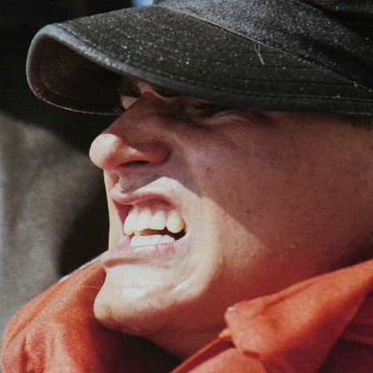

Krash
Well.... Class 189 took a little trip
along with our instructors down the Coranado Strip,
we ate a'lot a power-bars and carried our canteens
and we ran the bloody beaches at a pace made us scream!
... Then we ...
Dropped and pushed 'em out, but they said to keep 'em comin,
we weren't near as many as we were a while ago,
we dropped once more and then began a runnin,
Down from Coranado to the edge of Mexico!
Well we ran through the ditches and we ran on the beaches
and we ran on the berm where the army wouldn't go,
we ran so fast our instructors couldn't catch us,
then we swam are asses back from the edge of Mexico! Hooyah!
Contact Info
- Github: g1tKraken
- Portfolio: "Tavelin man"